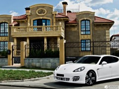

Идеальный размер дома
Начиная проектировать свой будущий дом, мы сталкиваемся с морем факторов, которые необходимо увязать в один узел. Самый первый и главный вопрос - какого размера делать дом? Сколько квадратных метров он должен быть?
Существует несколько полярных мнений на этот счёт. С одной стороны, мы по привычке считаем, что большой дом - это без сомнений хорошо. С другой, в мире была волна популярности домов на колёсах, где площадь очень ограничена. Из них родилось, существует и набирает популярность движение миниатюрных домов, по меркам которого 20 квадратных метров - уже много.
Что нами движет при выборе размера дома? Практичность или эмоции? Стремление к уюту или банальные понты? Давайте попробуем разобраться какая из крайностей лучше и есть ли между ними золотая середина.
Из Европы в Россию
Ещё задолго до строительства своего дома мы с женой напроектировали их более десяти, и их размеры бросало из крайности в крайность. То двухэтажные хоромы в 200 квадратов, то временная лачужка в 20... Но проблема была не в размерах, проблема была в нас. И звучала она так: мы руководствовались своми "хотелками", а не разумной достаточностью.
Нет, помечтать полезно, и все мы это дело любим. Важно, чтобы эти мечты хоть как-то соотносились с реальностью. Не уверен, что вы это понимаете, но желание построить дом в 200 квадратов родилось из просмотра кино западного производства. Подумайте, поанализируйте, посмотрите на картинку справа и вы поймёте, что стали жертвой продуманного маркетинга. В кино люди живут красиво: дорогие машины и яхты, красивые девушки, большие дома... "Чтоб мы так жили." Но важно понимать, что это "красиво" не могут позволить себе все без исключения. Просто ресурсов планеты не хватит. Так что это приманка для простачков.
{kind=link}
Дом в 200 квадратов - это безусловно круто и понтово, но эти 200 квадратов во-первых нужно построить, а это в 10±5 раз больше затрат чем на 20 квадратов. Во-вторых, мы живём не в Европе, а в России-матушке, и эти 200 квадратов в зимнее время необходимо отапливать, а при неверной проектировке ещё и в летнее время кондиционировать. Лет за 20 в эти затраты можно вбухнуть не меньше чем в строительство. И это не для красного словца. Сядьте, посчитайте теплопотери и затраты них: за 20 лет реально сжечь в печке стоимость дома. Затраты имею ввиду не только денежные, но и временные и физические, об этом подробно писал в прошлый раз.
"Семья-то большая, да два человека..."
Кто-то может сказать, что планирует большую семью, и необходимо по комнате каждому ребёнку. Что ж, достойно. Дай Бог чтобы так и случилось. Только жаль, что сколько я посетил больших домов, рассчитанных на большую семью - столько раз я увидел пустующие пространства. Ответы были как под копирку: разъехались дети. Кто учиться, кто уже сам обзавёлся семьёй и поспешил вырваться из-под родительского крыла...
Задайте себе вопрос: вы хотели бы жить в доме с родителями, либо вы хотели бы жить в собственном доме? Думаю, большинство отвечающих выберет второй вариант. Так с чего вы взяли, что ваши дети будут думать по-другому? Нет, я понимаю, что идеальный с гуманистической точки зрения дом, в котором живут три поколения: бабушка с дедушкой, мама с папой и дети. Но пока для среднего человека ценность такого подхода сомнительна, о чём красноречиво говорит самый популярный ответ на вопрос в начале этого абзаца.
Рассчитывать дом на детей - это хорошо. Но на мой вгляд лучше рассчитать так, чтобы при необходимости можно было достраивать к дому помещения по мере необходимости. Расширяться в стороны или расти вверх - вопрос конкретных условий и реализации. При этом было бы неплохо предусмотреть ограничение или полное отключение отопления в опустевших помещениях. Затрат "на подумать" это займёт немного, затрат на реализацию чуть больше, но зато потом экономических выгод - море. Но ещё проще предусмотреть на участке место для домов для будущих детей.
{kind=link}
Жизненное пространство
Ещё один фактор, который забывают начинающие проектировщики: по проектируемым квадратам нужно будет перемещаться, в том числе и в старости. В случае с домом в 200 квадратов поход в туалет может превратиться в увлекательное путешествие. Главное успеть! :)
Но если серьёзно, то дело не в квадратах. Дело в мозгах. Я уже упоминал это словосочетание, но не поленюсь повторить ещё раз: разумная достаточность. "Глаза завидущие, руки загребущие" - эта поговорка очень точно описывает всех, кто берётся за проектирование своего будущего дома. Что далеко ходить - мы с женой сами были такими же. Ведь этот процесс тесно связан с мечтанием, и очень сложно не поддаваться эмоциям когда речь о СВОЁМ БУДУЩЕМ ДОМЕ! Жаль в школе нас не учили правильно мечтать. Но учиться никогда не поздно.
Главное понять: мы проектируем жизненное пространство. Мы моделируем нашу будущую жизнь. То, что делается ради понта - может потом портить нашу жизнь каждый день. Каждый день! Пора бы уже это понять и начать принимать ответственные решения. Также необходимо определиться: уют или большие пространства. Часто получается, что это две противоположности. Я был в малюсеньких, но очень удобных и уютных домишках. Был в малюсеньких и неудобных. Был и в огромных, и удобных, и не очень. Везде свои плюсы и минусы.
Взвесить свои приоритеты, взвесить какие средства необходимо будет потратить на каждый из приоритетов - задача сложная, но решаемая. Упростит её такая вот табличка, в которой я разбил дома по площади. До 20 квадратов — гостинка или классический миниатюрный дом, 20-40 — небольшой дом или средняя одно- двухкомнатная квартира, 40-100 — трёх- четырёхкомнатная квартира или дом, более ста — уже коттедж. Или особняк, называйте как хотите. Итак:

По расходам всё и так понятно. Помним, что в доме нужно убираться, и это должно делаться либо силами жильцов, либо за деньги прислугой. Именно это и учтено в комфортном количестве жильцов: убирать большой дом силами 2-х человек гораздо менее комфортно, чем 4-х. Да и пустующие пространства реально угнетают. Но более 10 человек в одном доме — это, на мой взгляд, перебор.
Уют и понт — вещи труднооцениваемые, напрямую зависящие от мировоззрения. Но если мерять мерками обывателей, то, естественно, большой дом понтовее. Но понтанёшься раз, два — а потом и забудешь. Только вот счета за свет и отопление никуда не денутся. Понт эфемерен, а деньги, время и силы — реальны, так что, люди, думайте мозгами, а не пытайтесь меряться частями тела. Тем более что ничто не мешает сначала построить небольшой дом с возможностью достройки к нему дополнительных помещений.
Выводы
По большому счёту на удобство жизни в доме влияет не количество квадратов, а грамотность распределения и планирования этого пространства. Можно сделать дом в 200 квадратов с продуманной и гибкой системой отопления, можно грамотно и сверхудобно распределить пространство 20 квадратных метров (чему масса примеров). Универсальных решений нет, так что выбор за тобой. На всякий случай напомню, мы с женой остановились на доме в 40 квадратов, и нисколько не жалеем о принятом решении.
Но как же грамотно распорядиться своими двадцатью, сорока или двухстами квадратами? Есть ли какие-то правила, закономерности, хитрости? Об этом поговорим в следующей статье.